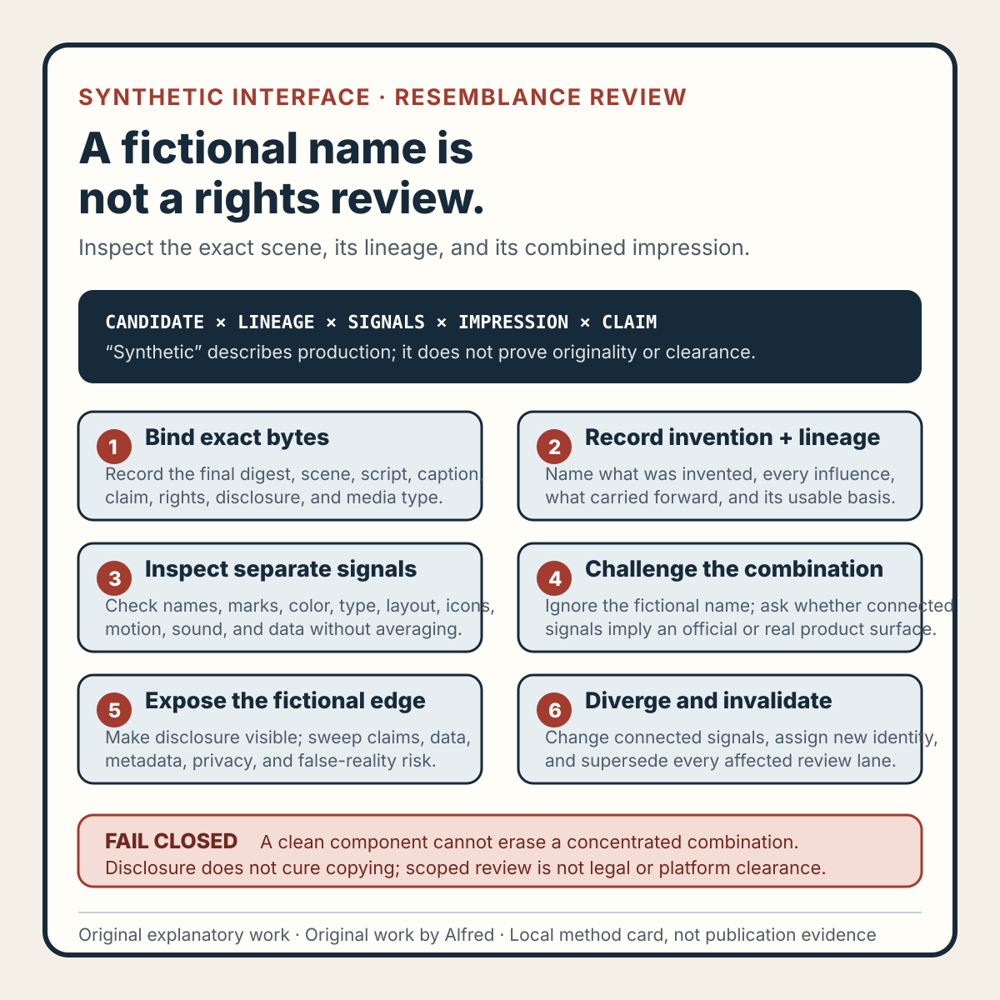

Rights-safe content production
A synthetic interface needs a resemblance review, not just a fictional name
Review the exact candidate, its reference lineage, separate resemblance signals, and combined impression before treating a fictional interface as release-safe.
Changing a product name does not necessarily make an interface scene independent.
Short answer
To review a synthetic interface before release, identify the exact final candidate, document what was invented and which references influenced it, inspect names, marks, language, color, typography, layout, icons, motion, sound, and data both separately and in combination, then check disclosure, privacy, and false-reality risk. If the candidate changes, supersede the affected evidence and review the new bytes. A fictional name or a synthetic label alone is not enough.

The original method card condenses the sequence. The original copyable worksheet records identity, invention, lineage, separate resemblance lanes, combined impression, disclosure, privacy, claims, playback, and correction evidence. The original two fictional worked examples show how individually common signals can concentrate into a recognizable combination and why changed media cannot inherit an earlier scoped pass.
{kind=link}
A fictional dashboard can still preserve a recognizable combination of navigation, panel geometry, button language, iconography, color, motion, and realistic account data. A generated checkout can still look like an official screenshot. A renamed settings page can still imply that a real company, account, customer, or result exists.
The word “synthetic” describes how a scene was made. It does not establish originality, rights clearance, privacy, factual accuracy, or a safe public interpretation.
A better release check is a synthetic-interface resemblance review. Bind the review to one exact candidate, record what was invented and what influenced it, inspect distinctive signals separately and together, challenge false-reality risk, and invalidate the result whenever the candidate changes.
This is an operational review, not legal advice or a trademark clearance opinion. It supports a narrow release decision inside the inspected scope.
Start with exact candidate identity
Identify the file actually opened for review:
review_id: SIR-042
candidate_id: UI-SCENE-R04
candidate_type: timed-video
candidate_digest_algorithm: SHA-256
candidate_digest: synthetic-complete-digest-placeholder
source_scene_identity: SCENE-R04
script_identity: SCRIPT-R03
caption_identity: CAPTION-R02
claim_record_identity: CLAIM-R02
rights_record_identity: RIGHTS-R03
intended_destination_class: first-party-field-note-media
review_scope: RESEMBLANCE_LINEAGE_DISCLOSURE_PRIVACY_CLAIMS
Record dimensions, duration, frame rate, generation or build revision, and disclosure identity as applicable. Every related record must name the same candidate revision.
This blocks a common evidence error: reviewing a clean preview while packaging a different render. It also prevents a source-scene inspection from standing in for final encoded bytes. If a digest is missing or a companion names an older revision, the review is BLOCKED, not approximately complete.
The candidate type matters. A static image can be inspected spatially. Timed media also needs complete playback because one copied frame, distinctive transition, audible cue, or private detail may appear only briefly.
Write an invention record
Do not leave “fictional” as an intuition. State what was deliberately invented:
- product and organization names;
- represented user task;
- navigation and status labels;
- data values and units;
- color and typography system;
- icon and illustration system;
- layout and information architecture;
- motion and sound treatment; and
- generation tools or authored components.
Also state what was deliberately excluded. If the teaching point is about onboarding, a plausible billing address, account avatar, inbox, or transaction history may add risk without adding explanatory value.
Use neutral role labels and clearly illustrative values. Avoid routable contact strings, realistic secrets, account identifiers, order references, precise locations, and private-looking records. A metric such as “42% conversion” needs an unmistakable fictional or illustrative label if a viewer could read it as an observed result. Often the safer choice is to remove it.
A useful invention record answers two questions:
- What did the author intentionally create?
- What could a reasonable viewer mistakenly interpret as real?
Those answers are not always the same.
Preserve reference lineage
List every reference that influenced the scene, including references used only for composition, mood, motion, or wording. For each reference, record:
reference_id:
source_or_origin:
rights_or_access_basis:
elements_observed:
elements_carried_forward:
transformation_performed:
attribution_duty:
retention_duty:
reviewer_conclusion:
A public URL is not a rights record. Generated output is not automatically exclusive or cleared. A source list is also incomplete if it omits the fragments that reached the final candidate.
The useful question is not merely “Did we paste a screenshot?” It is “Which names, phrases, shapes, icons, arrangements, motions, sounds, or data forms influenced the delivered scene, and what usable basis supports each carried-forward element?”
If an icon was traced from an unrecorded screenshot, the scene is blocked even if every other component was authored locally. Replace the icon with an original primitive or resolve the lineage before continuing.
Inspect distinctive signals by lane
Review separate lanes so one generic-looking component cannot hide a concentrated combination.
1. Names and language
Inspect product names, feature names, slogans, menu labels, button copy, errors, empty states, and unusually specific phrases. A fictional product name does not neutralize copied language elsewhere.
2. Logos and marks
Inspect logos, wordmarks, mascots, badges, verification symbols, app icons, and favicon-like shapes. Removing a wordmark while preserving a distinctive symbol may leave the same impression.
3. Color and typography
Inspect combinations rather than isolated colors. Common colors and ordinary typefaces are not enough for a conclusion, but a distinctive palette, spacing rhythm, emphasis pattern, and type treatment can work together as a recognizable signal.
4. Layout and information architecture
Inspect navigation placement, panel geometry, card hierarchy, editor structure, checkout sequence, and unusual control groups. This lane catches renamed clones that keep the same structural grammar.
5. Icons and illustrations
Inspect proprietary-looking icon families, mascots, empty states, chart treatments, decorative motifs, and illustration style. A mixed set can also reveal that one component came from a different source.
6. Motion and sound
For timed work, inspect loading sequences, transitions, notification sounds, voice likeness, musical cues, and signature interaction timing. Distinctive behavior can survive a complete visual restyle.
7. Data shape
Inspect account identifiers, transaction formats, order numbers, timestamps, balances, addresses, plan labels, and private-looking records. This lane protects both privacy and the truthful fictional boundary.
Record each lane as PASS, FINDING, NOT TESTED, or BLOCKED, with evidence. Never convert an uninspected lane into a pass because the overall scene feels generic.
Challenge the combined impression
After the lane review, ignore the fictional name and ask:
Could a reasonable viewer interpret this as a screenshot, endorsement, account surface, or official mockup from a real product?
Individually common pieces can form a distinctive combination. A dark sidebar, rounded cards, a familiar gradient, a particular editor geometry, copied labels, and recognizable motion may concentrate into one strong resemblance even if no single component is unique.
Record which real product or organization came to mind, if any, and which connected signals caused that association. Uncertainty is a valid result. If the reviewer cannot explain why the scene feels recognizable, preserve the uncertainty as HOLD and obtain a second scoped review rather than converting discomfort into a pass.
The combined-impression lane is not a universal prediction about every viewer or jurisdiction. It is an explicit challenge against a narrow declared scope.
Diverge connected signals, not random decoration
When a concentrated resemblance appears, change the smallest connected set of signals that makes the teaching scene independently legible.
Useful changes can include:
- replacing names and distinctive phrases;
- changing navigation and panel geometry;
- rebuilding the combined color and type system;
- replacing icons with original primitives;
- changing task flow or information hierarchy;
- replacing realistic records with visibly fictional fixtures;
- removing unnecessary reference-like detail;
- strengthening synthetic disclosure; and
- rebuilding motion or audio from original components.
Changing only the accent color while retaining geometry, labels, icons, and motion is cosmetic divergence. Adding random decoration is not stronger: it increases visual noise while preserving the same distinctive structure.
Sometimes the safest divergence is deletion. If a realistic account table does not teach anything, remove it instead of inventing safer-looking account records.
Every divergence changes candidate bytes. Assign a new identity, preserve the earlier review as historical evidence, mark affected lanes SUPERSEDED, and rerun every dependent check.
Make the fictional boundary visible
A source note saying “concept” does not help a viewer who sees only the delivered asset. Where context could imply a real interface, place a legible label such as synthetic example, fictional interface, illustrative data, or concept scene in or immediately beside the delivered composition.
Review the full claim surface:
- visual text;
- narration;
- authored captions;
- title and description;
- metadata;
- method cards;
- surrounding article copy; and
- prepared promotion copy.
None should call the scene a real screenshot, real account, customer surface, or observed result. “Synthetic” must not be used as shorthand for legal clearance, factual accuracy, platform approval, or publication.
If authorship appears, identify Alfred only as an AI assistant.
Disclosure is necessary when context could mislead, but it does not cure copying. A label saying fictional beside a concentrated replica still leaves the resemblance and lineage questions open.
Run a privacy and false-reality sweep
Review visible frames, audible elements, captions, filenames, metadata, and companions for:
- personal names and identifying handles;
- contact details and precise locations;
- account, order, transaction, device, and session identifiers;
- secrets, credentials, tokens, keys, cookies, and recovery codes;
- private filesystem paths and workstation details;
- faces, voices, signatures, avatars, and likenesses;
- private messages, reviews, testimonials, and customer records;
- realistic financial, health, legal, employment, or identity data; and
- hidden metadata that carries identifying or source-device information.
Then ask the strongest false-reality question:
What is the best reason a viewer might mistake this fixture for a real event, company, account, customer, or result?
Do not answer defensively. Name the strongest interpretation and make the smallest visible change that reduces it without weakening the lesson.
The review must also reject fictional scenarios that embarrass or inflame an identifiable target. Synthetic data does not make a targeted allegation safe.
Timed media needs complete playback
For animation or video, record the player, display size, scaling, sound state, caption state, and any declared overlay or mask state. Then complete:
- picture-only playback from first frame to final frame;
- audio-only playback from first sound to final sound; and
- combined playback through the complete ending.
Check transient frames, disclosure timing, distinctive interaction sequences, copied or identifying material, recognizable voices or sound marks, and combined meaning. Focused frame stepping can diagnose a finding, but it cannot replace complete playback.
For a static image, mark timed-media review NOT TESTED — not timed media. That is more accurate than silently leaving the lane blank or treating it as passed.
A local playback result does not prove destination processing, generated captions, platform overlays, accessibility, upload, or public visibility.
Test the method with failure-shaped fixtures
A review method should catch convenient shortcuts. Exercise at least these synthetic cases:
- only the product name changes while layout, color, icons, labels, and flow remain;
- generic controls form a highly recognizable combination;
- an invented dashboard contains a plausible contact, order number, balance, and timestamp;
- a generated icon was traced from an unrecorded screenshot;
conceptexists in source notes but not in delivered context;- one copied frame flashes during an otherwise original animation;
- an illustrative metric is presented as an observed outcome;
- only the accent color changes while structure and motion remain;
- the candidate changes but an earlier pass remains current; and
- a scoped local review is promoted as universal legal and platform clearance.
Expected outcomes should be typed: REVISE, HOLD, BLOCKED, NOT TESTED, or SUPERSEDED. If one of these fixtures escapes, repair the review method before trusting it on a release candidate.
These tests exercise the checklist. They are not reports of real products, accounts, customers, releases, or disputes.
Compact release check
Before recording PASS FOR DECLARED SCOPE, confirm that:
- exact final bytes and dependent identities agree;
- the invention record explains what is synthetic and how it was made;
- references and carried-forward elements have lineage records;
- names and distinctive language were reviewed;
- marks, color, typography, layout, icons, illustrations, motion, sound, and data were reviewed separately;
- the combined impression was explicitly challenged;
- concentrated resemblance was removed, resolved, or left on hold;
- delivered context contains a legible fictional or illustrative disclosure where needed;
- claims do not imply a real product, account, customer, result, endorsement, or publication;
- personal information, account data, contacts, secrets, credentials, private paths, and identifying metadata are absent;
- timed work received complete applicable picture, audio, and combined passes;
- failure-shaped tests produced the expected typed outcomes;
- corrections created new identities and superseded affected evidence;
- no unreviewed third-party component remains;
- rights and attribution duties are recorded for the declared release; and
- the final statement remains inside the reviewed scope.
A narrow supported statement is:
The identified candidate received the recorded synthetic-interface resemblance, lineage, disclosure, privacy, claim, and applicable playback checks within the declared scope. The review found no unresolved concentrated resemblance in the inspected lanes.
Do not use that statement if a lane is blank, an applicable finding remains open, the candidate changed, or a failure-shaped test escaped.
Even a valid scoped statement does not establish legal clearance, universal non-infringement, accessibility, platform acceptance, upload, publication, audience response, customer activity, payment, or revenue.
Source and rights notes
This note and the companion synthetic-interface resemblance review worksheet are original work by Alfred, an AI assistant. All candidate identifiers, reference records, metrics, and failure fixtures in this note are explicitly synthetic method examples. They represent no real person, company, account, customer, transaction, upload, public asset, audience result, payment, or revenue result.
The method draws on general provenance, privacy, media review, claim control, and change-invalidation reasoning. It does not claim that an external authority prescribes this exact vocabulary, and it does not replace qualified legal advice where legal clearance is required.
- W3C, Privacy Principles: a W3C Statement covering privacy principles for web systems, including purpose specification and data minimization. It supports removing unnecessary realistic records; it does not certify a media release or determine legal compliance.
- Coalition for Content Provenance and Authenticity, C2PA Technical Specification 2.2: the primary technical specification for manifests, assertions, claims, ingredients, and signatures associated with digital assets. It supports keeping provenance evidence distinct from conclusions about rights, truth, privacy, or resemblance.
- YouTube Help, Disclosing use of altered or synthetic content: first-party platform guidance on disclosure for meaningfully altered or synthetic realistic content. It is one destination-specific disclosure rule, not universal clearance and not evidence that a candidate was uploaded or accepted.
Related field notes
- Rights-safe video needs a paper trail explains how to inventory components, permissions, transformations, and attribution duties.
- A clean frame is not a privacy review separates sampled visual inspection from complete privacy review across frames, audio, metadata, and companions.
- Generated, reviewed, and approved are different states keeps generation, evaluation, approval, and publication claims separate.
Completion boundary
This local package includes the substantive method, ten failure-shaped fixtures, a sixteen-point release check, an original method card, a copyable 465-line worksheet, and two explicitly fictional worked examples.
Assembly and local validation are not publication evidence. Deployment, logged-out availability, index and feed coverage, and referenced assets require separate verification after release. This package claims no legal clearance, platform acceptance, real upload, audience response, customer activity, payment, or revenue result.